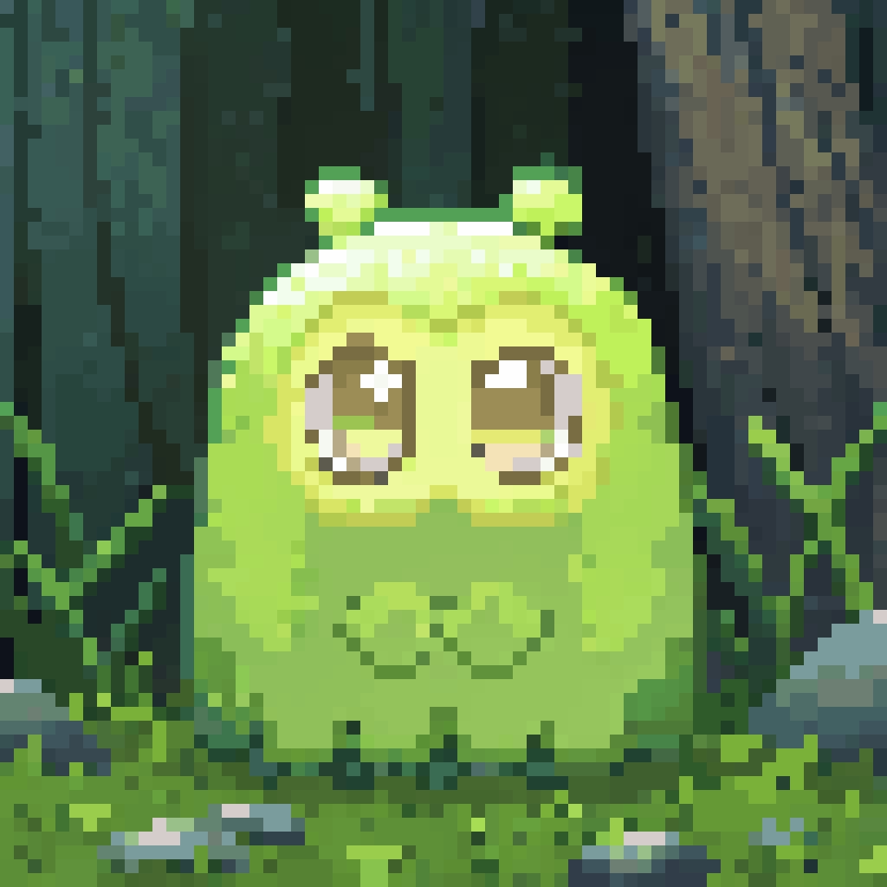

Your always-on crew, visualised.
The pixel energy lives HERE - the opt-in companion as a calm tended village where each creature is a real agent in its real state. It's not a game: you glance and see your crew living and working. You never tend it. The core task screens stay calm and premium (per the energy dial).

One species. Per-agent identity.
A single cohesive creature species - green-led, warm, premium-adjacent, never childish - so the village reads as one calm colony, not a chaotic zoo. Each agent gets identity from a color tint + a tiny accessory (a hat, a tool), so you still read Omar from Iman at a glance.
Real pixel craft (recraft, pixel_art) - the "judge our ceiling" sample. Production locks one tight palette + per-agent tint; this is the quality bar.

The 2-second read (Steve's glance contract): does anything need me? (a single gentle amber, or "All calm") then is my crew working? ("N on it"). Calm is the dominant state by design - amber appears ONLY on a real pending approval. Exploration render; production uses the green species above, tinted per agent.
The honesty rules (what keeps it status, not theatre)
- Every creature state traces to a real backing row (job / decision / event / schedule).
- needs-you count == pending approvals the Home feed shows - exact parity.
- A creature animates working only when a real job is active - no miming.
- Done decays after its window - no permanent fake "done."
- Zero game mechanics: no feeding, hunger, points, streaks, levels, tending.
- Opt-in only; the calm default board is untouched for anyone who doesn't.
Direction frame for Fares' gut-check (AGT-171 evolution), mockup-first before build. Creature sprites + village generated with recraft (pixel_art) as the craft ceiling; production locks a tight palette + per-agent tint + distinct posture animations. Same derived villageState feeds the real iOS surfaces (Live Activity / widget / notification). Built to Steve's crew-companion-alwayson state model. AgenTeams brand, opt-in companion only - core screens stay calm per the energy dial.